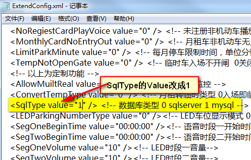
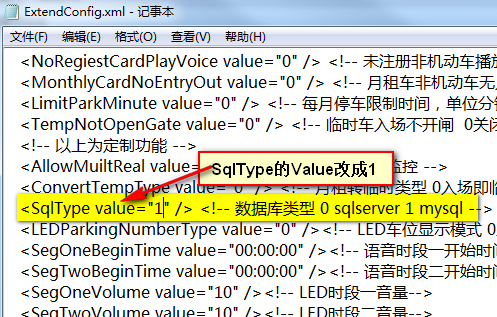
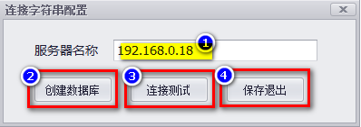
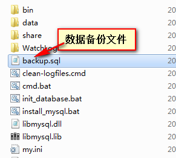
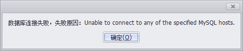
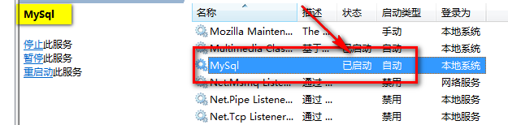

MySql数据库引擎使用说明
管理软件支持MySql数据库,且无需单独安装MySql数据库.
使用MySql将无法使用与云有关的功能.
数据库类型一旦确定就不可更改.
1.数据库类型切换为MySql
找开软件根目录,找到"Config"文件夹下的"ExtendConfig"文件,用记事本格式打开,如下图:
 
重新启动软件.

重新启动软件.
2.服务器上初始化数据库文件
服务器:准备作为运行数据库程序的电脑,且能保证长时间不关机.
第一次启动软件,弹出如下图所示的对话框,选择"是".
如下图,出现数据库连接配置对话框.

① 填写本机电脑的IP地址.
② 在步骤1中所示电脑上创建数据库.
③ 测试步骤1中所示电脑上是否存在数据库文件.
④ 保存数据库连接信息,以便下次跳过配置,直接进入软件.
重新启动软件即可正常使用各项功能.
3.远程访问数据库
停车场局域网内其它电脑远程访问数据库时,只需如下配置即可.
启动软件,弹出警示窗口,选择"是".
如下图,出现数据库连接配置对话框.
① 填写运行Mysql数据库电脑的IP地址.即服务器电脑的IP.
② 测试步骤1中所示电脑上是否存在数据库文件.
③ 保存数据库连接信息,以便下次跳过配置,直接进入软件.
重新启动软件即可正常使用各项功能.
4.数据库备份与还原
数据库备份和还原操作需要在服务器电脑上运行,即运行MySql数据库的电脑.
点击"数据库备份"按钮时,会自动将数据备份到软件根目录中的mySql文件下.
MySql数据库备份文件存储路径如下图所示:

点击软件"数据库还原"按钮时,会自动将上图备份的文件还原到MySql数据库中.
5.可能遇到的问题
(1)数据库创建失败,路径不能为中文......
 可能的原因:
a.指定的服务器名称不正确,软件找不到对应电脑的IP.
b.软件所在路径太深.
c.如上排除还是报错,将软件拷贝到D盘根目录下运行.
可能的原因:
a.指定的服务器名称不正确,软件找不到对应电脑的IP.
b.软件所在路径太深.
c.如上排除还是报错,将软件拷贝到D盘根目录下运行.
(2)数据库连接失败,失败原因......

可能的原因:
a.指定ip电脑上未创建MySql数据库.
b.排除原因a,则指定ip电脑上MySql服务未运行.

c.指定ip电脑上防火墙未关.
d.网络故障.